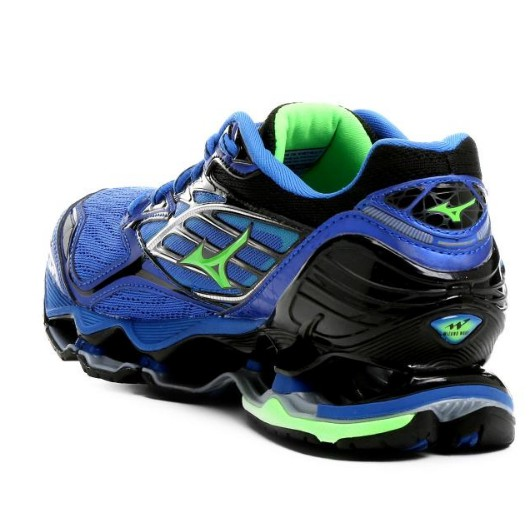

MIZUNO
SOBRE A MARCA :
-
Mizuno Corporation é uma empresa Japonesa
-
Criada em 1 de abril de 1906 por Rihachi Mizuno
-
Inicialmente o foco era fabricar produtos ortopédicos
-
A Mizuno conta com o mais revolucionário laboratório de biomecânica do mundo
PATROCÍNIOS :
-
No Brasil, a marca patrocina Wallace, William e Maurício Borges, três estrelas da seleção de vôlei,
além da Confederação Brasileira de Judô
-
A Mizuno também patrocina várias seleções no mundo inteiro
como a seleção japonesa de judô e várias seleções de vôlei do mundo como os EUA, Rússia, Canadá e Japão
-
Em números: no atletismo e triathlon, são mais 225 atletas pelo mundo;
no futebol são mais de 80; no rugby são mais de 440; no handball são 300 e no vôlei são mais de 100
CURIOSIDADES SOBRE A MARCA :
-
Um dos melhores pilotos da históriada Fórmula 1, Ayrton Senna,
tem os pés moldados para a produção exclusiva de calçados Mizuno, para assim atingir sua melhor performance.
-
Rivaldo ganha o prêmio Bola de Ouro com chuteiras Mizuno
-
No ano de 1999 Rivaldo ganha o prêmio Bola de Ouro com chuteiras Mizuno
-
Em 2017 foi inaugurada a primeira loja Mizuno do Brasil

©
Desenvolvido por: José Pedro